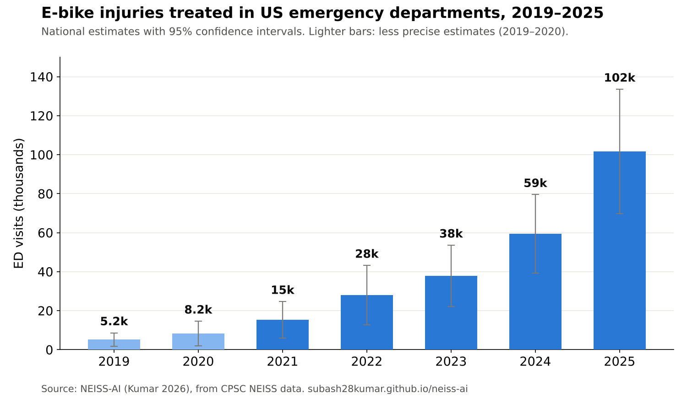

NEISS-AI · for journalists
National estimates of e-bike and e-scooter injuries treated in US hospital emergency departments, 2019–2025, from the Consumer Product Safety Commission's NEISS data. Free to use with credit.
All numbers are national estimates with 95% confidence intervals. Updated October 2026 from the complete CPSC NEISS files.

Download chart (PNG)One-page fact sheet (PDF)
Free to publish with the credit line: “Source: NEISS-AI (Kumar 2026), from CPSC NEISS data.”
How it works, in three lines. NEISS is a national sample of about 100 hospital emergency departments run by CPSC. NEISS-AI reads the short injury description in every record with a validated text classifier to identify e-bikes, e-scooters and other devices. It then applies CPSC's survey weights to estimate national totals with 95% confidence intervals.
Accuracy. NEISS-AI's e-bike estimates for 2022–2024 match CPSC's own published figures within 5%. Because it reads the injury descriptions, its counts stay consistent across CPSC's 2024 change in product codes for e-bikes.
Please note.
Subash Kumar is an independent researcher in Ellicott City, Maryland, who builds open AI tools for road safety and injury prevention. ORCID 0009-0003-6661-3424.
For interviews, custom tables (for example by age group or year) or questions about the data: nivi05subhash@gmail.com. I usually reply within one day.
Cite the software: Kumar S. NEISS-AI: AI-assisted national injury estimates from NEISS emergency department narratives. Version 1.4.0 [software]. Zenodo; 2026. https://doi.org/10.5281/zenodo.23550272